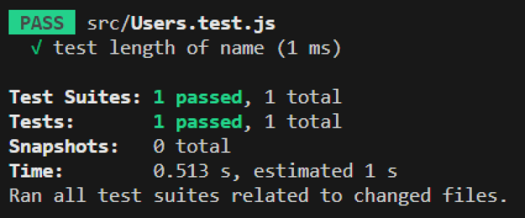
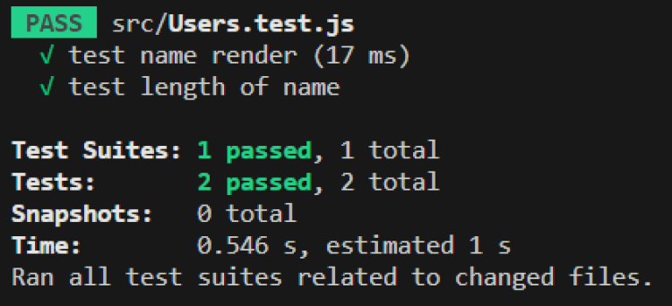

Jest est un framework de test JavaScript largement utilisé dans le développement d’applications web. Il offre une suite complète d’outils et de fonctionnalités qui facilitent l’écriture, l’exécution et l’analyse des tests.
Ce framework est spécialement conçu pour les projets basés sur des technologies comme React, Vue.js, Angular et Node.js, mais il peut également être utilisé avec d’autres frameworks et bibliothèques JavaScript.
L’un des principaux avantages de Jest réside dans sa facilité d’utilisation. Il est livré avec une configuration par défaut prête à l’emploi, ce qui signifie que vous pouvez commencer à écrire des tests immédiatement, sans avoir à se soucier de la mise en place de l’environnement de test.
Ce framework offre une syntaxe claire et concise pour écrire des assertions, ce qui rend les tests plus lisibles et maintenables. Il prend en charge les fonctionnalités avancées telles que le groupement des tests, les mocks et les spies, permettant aux développeurs de simuler des comportements et de vérifier les appels de fonctions.
Une autre caractéristique intéressante est sa fonction de surveillance intégrée. Lorsque vous lancez les tests, il surveille les fichiers modifiés et ne relance que les tests pertinents, ce qui permet d’accélérer considérablement le processus de développement.
Après l’exécution des tests, Jest livre un rapport détaillé fournissant des informations sur les tests réussis, les échecs et la couverture de code. Cela facilite le suivi et la correction des erreurs.
Les assertions sont des déclarations qui permettent de vérifier si un résultat attendu correspond à celui obtenu lors de l’exécution d’un test. Elles servent à évaluer si une condition est vraie ou fausse. Dans le contexte des tests unitaires, les assertions sont utilisées pour valider le comportement d’une fonction ou d’un morceau de code.
Les mocks sont des objets simulés qui remplacent des dépendances réelles dans les tests unitaires. Ils permettent d’isoler le code en cours de test en remplaçant les parties du code qui interagissent avec des composants externes, tels que des API, des bases de données ou d’autres services. En utilisant des mocks, vous pouvez contrôler les réponses attendues de ces dépendances et simuler différents scénarios de test. Jest offre des fonctionnalités intégrées pour créer et gérer des mocks, notamment en remplaçant les modules importés par des versions simulées et en définissant des comportements spécifiques pour les appels de fonctions.
Les spies (espions) sont des fonctionnalités qui permettent de surveiller et de suivre le comportement des fonctions lors de l’exécution des tests. Ils enregistrent des informations sur les appels de fonctions, comme les arguments passés, le nombre d’appels et les valeurs de retour. Les spies sont utiles pour vérifier si une fonction a été appelée avec les bons arguments, combien de fois elle a été appelée ou pour obtenir des informations sur son comportement interne pendant les tests.
Voir vidéo
Dans ce cours, nous utiliserons Vite pour initier notre application React, dans le terminal de notre éditeur de code, nous écrivons la commande suivante :
npm init vite@latest
Après avoir saisi le nom du projet ainsi qu’un environnement de développement React avec JavaScript, nous pouvons accéder au dossier qui contient notre projet grâce à la commande suivante :
cd mon-app
Puis en tapant la commande suivante pour installer les dépendances
npm install
Nous allons utiliser testing-library afin d’inclure Jest a notre projet.
Pour cela, nous pouvons inscrire la commande suivante dans le terminal de notre éditeur :
npm install @testing-library/jest-dom @testing-library/react
jest
Nous avons désormais Jest en version 29.5.0 dans notre projet React.
Afin de gérer l’exécution des tests par Jest, nous devons rajouter un script supplémentaire dans notre fichier package.json :
See the Pen Untitled by OpenSpirit (@OpenSpirit) on CodePen.
Par ailleurs, pour être en mesure d’effectuer le rendu des snapshots, nous devons ajouter react-test-renderer à notre application. Pour cela, écrivez la commande suivante dans le terminal :
npm install --save-dev react-test-renderer
Dans le contexte de Jest, un snapshot est une capture de la sortie rendue par un composant ou une fonction lors de son exécution. Il s’agit d’une représentation textuelle de la structure HTML, des propriétés et des valeurs des composants ou d’autres éléments rendus.
Lorsque vous créez un snapshot, Jest enregistre le rendu actuel du composant ou de la fonction dans un fichier .snap. Ce fichier contient les données qui correspondent à l’état du composant à un moment précis. Lorsque les tests sont exécutés à nouveau, Jest compare la sortie actuelle avec le snapshot enregistré pour s’assurer qu’aucun changement inattendu n’a été introduit.
Le test d’exemple présent dans le projet utilise la bibliothèque de tests @testing-library/react.
Il teste si le composant App rend correctement le lien "learn react".
La fonction render est appelée pour rendre le composant App. Cela simule le rendu du composant dans un environnement de test isolé.
Ensuite, la constante linkElement est déclarée en utilisant la fonction screen.getByText(/learn react/i). Cette fonction recherche dans le rendu du composant si un élément contenant le texte "learn react" est présent.
Si un tel élément est trouvé, il est stocké dans cette variable.
Enfin, expect est appelée en combinaison avec toBeInTheDocument pour vérifier si linkElement est bien présent dans le document. Si c’est le cas, le test réussit. Sinon, le test échoue.
Afin de pouvoir lancer le test, et vérifier si notre composant App effectue correctement le rendu de ce lien “learn react”, nous pouvons utiliser la commande suivante dans le terminal :
npm run test
Après quelques instants, nous pouvons voir que le test App.test.js est passé avec succès !
Jest offre une variété de comparateurs intégrés pour vérifier différentes conditions et assertions dans les tests unitaires.
Ces comparateurs facilitent la validation des résultats attendus, en permettant de vérifier divers aspects du code testé.
Vous pouvez retrouver l’ensemble des comparateurs proposé par Jest dans la documentation :
JESTNous allons créer un composant nommé Users.js afin d’illustrer l’utilisation des tests. Dans ce nouveau fichier Users.js, écrivez le code suivant :
See the Pen Untitled by OpenSpirit (@OpenSpirit) on CodePen.
Ici nous avons simplement créé un tableau contenant plusieurs noms d’utilisateurs, une fonction qui permet d’exclure les utilisateurs possédant un nom composé de 5 lettres ou moins.
Et enfin une logique de rendu nous permettant d’afficher la liste des utilisateurs dans notre application.
Nous allons maintenant mettre en place un test pour notre fonction nameLength, afin de nous assurer que celle-ci occupe bien le rôle attendu. Pour cela, nous pouvons créer un fichier Users.test.js qui va contenir notre logique de test correspondante à notre composant Users.
Nous allons inscrire le code suivant afin de tester notre fonction :
See the Pen Untitled by OpenSpirit (@OpenSpirit) on CodePen.
Ici nous avons créé un test qui va tester la fonction nameLength importée.
Nous stockons le résultat de la fonction dans une variable filteredUsers et vérifions si le tableau retourne bien le nom Arthur qui possède plus de 5 lettres et si le prénom Lola a bien été supprimé.
Pour lancer le test, nous pouvons accéder au terminal de l’éditeur et écrire la commande suivante :
npm run test
Après l’exécution du test par Jest, nous devrions avoir un retour indiquant que le test est passé avec succès :
Afin d’effectuer un test du rendu de notre composant, nous devons utiliser les méthodes render et screen de testing-library. Ces méthodes vont nous permettre de créer un rendu du composant et ainsi pouvoir tester le résultat de ce rendu. Nous allons écrire un test supplémentaire dans notre fichier Users.test.js afin de vérifier que la liste des utilisateurs s’affiche correctement dans l’application :
See the Pen Untitled by OpenSpirit (@OpenSpirit) on CodePen.
Dans ce test supplémentaire, nous avons utilisé la méthode render afin d’effectuer un rendu de notre composant Users.
Ensuite via la méthode getByText de screen, nous avons pu vérifier si le nom d’utilisateur Julien était bien présent dans l’application, dans ce cas le test sera passé avec succès.
Afin d’illustrer la mise en place des tests d’événement avec Jest, nous pouvons mettre en place une logique de rendu conditionnel de notre liste dans le composant Users, écrivez le code suivant dans Users.js :
See the Pen Untitled by OpenSpirit (@OpenSpirit) on CodePen.
Ici nous avons ajouté un bouton qui permet d’afficher ou cacher la liste via un rendu conditionnel soumis à la valeur de l’état du composant.
Ainsi, par défaut la liste n’est pas affichée et si l’utilisateur clique sur le bouton, la liste apparaît dans l’application.
Pour effectuer des tests d’événement, nous pouvons utiliser fireEvent de Jest qui va permettre de simuler une interaction de l’utilisateur, ainsi nous sommes en mesure de tester notre composant et sa réaction à l’interaction.
Dans notre fichier test User.test.js écrivez le code suivant :
See the Pen Untitled by OpenSpirit (@OpenSpirit) on CodePen.
Après avoir effectué un rendu du composant User, nous vérifions que le prénom Elodie n’est pas présent dans l’application, car par défaut la liste n’est pas affichée dans l’application.
Ensuite, nous stockons notre bouton dans une variable button en y accédant via le texte qu’il contient, puis via la méthode click de fireEvent, nous simulons un clic sur ce bouton afin de déclencher le rendu de la liste.
Enfin, nous vérifions que le prénom Elodie apparaît maintenant dans notre application.
Si nous effectuons maintenant le lancement des tests, nous devrions avoir deux tests passés avec succès :
Voir vidéo